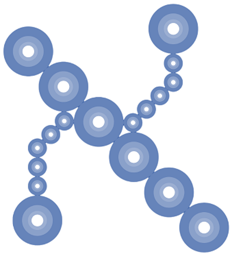

Revista Aleph Subcero
Director: Dr. Gilberto Paredes
Editor: Dra. Angela Torres
Revista Aleph Subcero
La Revista Aleph Sub Cero (ISSN 1856-2752) es una publicación arbitrada de carácter semestral (enero-junio y julio-diciembre) del Departamento de Matemática y Física de la Universidad Nacional Experimental del Táchira (UNET) que publica artículos de investigación científica y tecnológica, artículos de revisión y ensayos vinculados a las áreas de Matemática, Física, Estadística, Informática, Inteligencia Artificial, Ciencia de Datos, así como investigaciones vinculadas a la Didáctica de la Matemática y Didáctica de la Física.
Con el propósito de garantizar la calidad y relevancia de los productos de investigación publicados los correspondientes artículos y ensayos son sometidos a la consideración de árbitros calificados pertenecientes a instituciones universitarias del ámbito nacional e internacional. Cabe acotar que los correspondientes artículos expresan directamente las opiniones de sus autores y no necesariamente las del Comité Editorial.
Misión
La Revista Aleph Sub Cero (ISSN 1856-2752) se propone ser un órgano divulgativo de la comunidad de investigadores, en un formato multidisciplinar, que busca constituirse en un espacio académico que contribuya a visualizar los productos investigativos en las áreas de la Matemática, Física, Estadística, Informática, Inteligencia Artificial, Ciencia de Datos, así como en las Ciencias de la Educación, específicamente en lo atinente a la Didáctica de las ciencias fundamentales y y la ingeniería. Por lo que, atendiendo a esta última vertiente la revista ofrece un espacio abierto a la presentación y análisis de perspectivas, epistemologías, y diseños metodológicos, reflexiones teóricas y resultados de investigaciones relevantes vinculadas a la didáctica de las ciencias e ingenierías.
Visión
Ser un referente, en el contexto nacional e internacional, de publicaciones de producciones científicas, en las ramas que su abanico multidisciplinar abarca, con altos estándares de calidad y rigor metodológico.
Objetivos
La Revista Aleph Sub Cero (ISSN 1856-2752) tiene como objetivos
los siguientes:
1.Presentar los resultados de las labores investigativas generadas en los diferentes
departamentos y unidades de investigación de la UNET y otras instituciones académicas
en el contexto nacional e internacional, vinculadas con el abanico multidisciplinar
que centra su interés.
2.Estimular la producción investigativa de la UNET y de otras universidades en
aras de generar conocimiento a partir de procesos de indagación ajustados al rigor
metodológico.
3.Difundir el conocimiento científico y tecnológico generado a partir de investigaciones en las áreas
de Matemáticas, Física, Estadística, Informática, Inteligencia Artificial y Ciencia de Datos, que
signifiquen un aporte significativo al avance de estos campos del saber.
4. Difundir las valiosas contribuciones producto de investigaciones
científicas recientes y reflexiones teóricas innovadoras en las áreas de Didáctica
de las matemáticas. física, química e ingeniería.
5. Servir como órgano divulgativo de teorías y enfoques didácticos innovadores que
favorezcan el mejoramiento de la calidad educativa, particularmente en lo concerniente
a la enseñanza y aprendizaje de las matemáticas, física, química e ingeniería.
Comunidad Académica y Científica a la que se dirige
La Revista Aleph Sub Cero (ISSN 1856-2752) está dirigida a docentes e investigadores y profesionales, a nivel nacional e internacional, que realicen actividades académicas y científicas en las áreas de la Matemática, Física, Estadística, Informática, Inteligencia Artificial y Ciencia de Datos. La revista acepta trabajos de investigación empírica, ensayos teóricos o metodológicos, diseños instruccionales o experiencias pedagógicas sistematizadas sobre la enseñanza de las matemáticas, física, química e ingeniería.
Políticas de reuso
La Revista Aleph Sub Cero (ISSN 1856-2752) permite que los autores conserven los derechos de publicación sin restricciones. Por otra parte, los autores garantizan a la revista el derecho de ser la primera publicación del trabajo. Adicionalmente, los autores no deben someter simultáneamente a arbitraje en otra revista el artículo enviado. En el caso de que un artículo se encuentre en proceso de evaluación y el autor desee retirarlo debe enviar una correspondencia debidamente firmada al consejo editorial a través del correo, revistaalephunet@gmail.com manifestando el motivo del retiro de manera que se evite la continuación en el proceso editorial.
Descripción del proceso editorial
A continuación se presenta el desglose de las fases correspondientes al
proceso editorial seguido en la Revista Aleph Sub Cero:
1. Recepción del manuscrito: Una vez que se recibe el manuscrito,
se envía un correo electrónico para acusar el recibo. En esta primera fase se requiere el
envío de la carta de certificación de manuscrito inédito firmada por todos los autores, el
formato de datos de autor e investigación, así como un archivo anónimo que contenga el cuerpo del
manuscrito.
2. Revisión de adecuación a las pautas: El equipo editorial procede
a efectuar la correspondiente revisión, a fin de determinar si el manuscrito se encuentra acorde
a los requisitos formales de presentación atendiendo al tipo de producto académico (artículo de
investigación, artículo de revisión o ensayo). Adicionalmente se confirma que los tres
archivos mencionados en el apartado anterior hayan sido enviados, de no ser así se
notifica al autor para que proceda a efectuar el correspondiente envío.
3. Confirmación de la pertinencia temática y del cumplimiento de las
pautas básicas de escritura académica: El equipo editorial procede a leer el manuscrito a
fin de determinar si cumple con los parámetros esenciales de la escritura académica y si
se encuentra acorde al campo temático de la revista. De cumplirse lo anteriormente indicado
se continúa con el proceso. De lo contrario, se notifica a los autores las razones por las
cuales no es aceptado el manuscrito.
4. Selección de evaluadores: Atendiendo al área de conocimiento en el
cual se inserta el manuscrito se procede a seleccionar dos evaluadores para que procedan a
la revisión del documento anónimo.
5. Evaluación inicial por pares expertos: Se procede a efectuar la
evaluación del manuscrito bajo la modalidad de dictamen académico doble ciego por parte de
pares externos. Para ello el editor solicita a dos expertos de alto nivel en la temática propia
del manuscrito y reconocida trayectoria en el campo investigativo, así como con experiencia
en la metodología utilizada, evaluar el manuscrito de manera anónima. Para formalizar el
proceso, el editor envía a cada par evaluador a) el manuscrito original sin ninguna
referencia a sus autores, b) las normas de publicación y c) un formato de evaluación
de acuerdo con la naturaleza del artículo (artículo de investigación científica y
tecnológica, de revisión documental o ensayo), y le asigna un plazo de dos semanas
para preparar y enviar sus correspondientes apreciaciones. Cabe destacar que en el
formato de evaluación se solicita a los pares: a) indicar el cumplimiento o no de
criterios de forma y contenido; b) realizar una valoración general del artículo incluyendo
sugerencias, aportes y observaciones. La evaluación concluye con un dictamen que indica
si un manuscrito es: Aceptado, Aceptado con modificaciones menores, Aceptado con
modificaciones mayores, o Rechazado. En caso de presentarse divergencias significativas
entre las evaluaciones aportadas se recurrirá a un tercer experto.
6. Preparación de la segunda versión del manuscrito: Al recibir
las correspondientes evaluaciones el equipo editorial determina si los autores pueden presentar
una nueva versión del documento que atienda las sugerencias y observaciones de los evaluadores
o si el manuscrito se retira del proceso editorial debido a que amerita cambios profundos.
Seguidamente los autores son notificados del resultado alcanzado en el proceso de evaluación.
En caso de que los autores manifiesten su interés en enviar una nueva versión, el editor
asigna una fecha de envío conforme a la profundidad de los ajustes que se deben realizar.
Si el manuscrito es rechazado de manera unánime, se procede a informar a los autores que
este será retirado del proceso y se le harán llegar las observaciones emitidas por los
pares expertos.
7. Confirmación de la realización de los ajustes en la segunda
versión: Una vez que sea recibida la nueva versión el equipo editorial la remite a cada evaluador,
de manera anónima, junto con la evaluación de la primera versión del manuscrito que cada
experto envió. Esto con la finalidad de verificar si los ajustes sugeridos fueron atendidos
por los autores. Considerando ese insumo, cada experto evalúa nuevamente el artículo e indica
si es necesario realizar ajustes adicionales o si considera que el artículo se encuentra en
condiciones de ser publicado.
8. Preparación de la versión final: Al recibir la nueva valoración
de los pares evaluadores, si coinciden en la decisión de publicar entonces el artículo pasa
al proceso de corrección de estilo y diagramación. En caso de los evaluadores, o alguno de
ellos, consideren que aún es necesario efectuar ajustes al manuscrito. El equipo editorial
procede a preparar un nuevo documento con las evaluaciones manteniendo el anonimato de
los expertos el cual es enviado a los autores, el proceso anterior se repite hasta que
los evaluadores consideren que el manuscrito se encuentra en condiciones de ser publicado.
Normas para autores Revista Aleph Sub Cero
En el siguiente enlace puede descargar las normas a seguir por los
autores que deseen publicar en la revista.
Normas para los autores
Modelo en .doc de artículo
Comitee Editorial
Dra. Ángela TorresDr. Gilberto Paredes
Dra. Tania Peña
Dra. Blanca Guillén
Árbitros
Dra. Ángela TorresDra. Tania Peña
Dra. Blanca Guillén
Dra. Irma Sanabria
Dra. Arelis Díaz
Dr. Jorge Valera
Dr. Gilberto Paredes
MsC. Blanca Gámez
Dr. Emildo Marcano
Dra. Betsy Sánchez